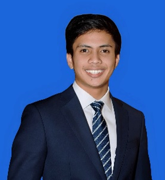
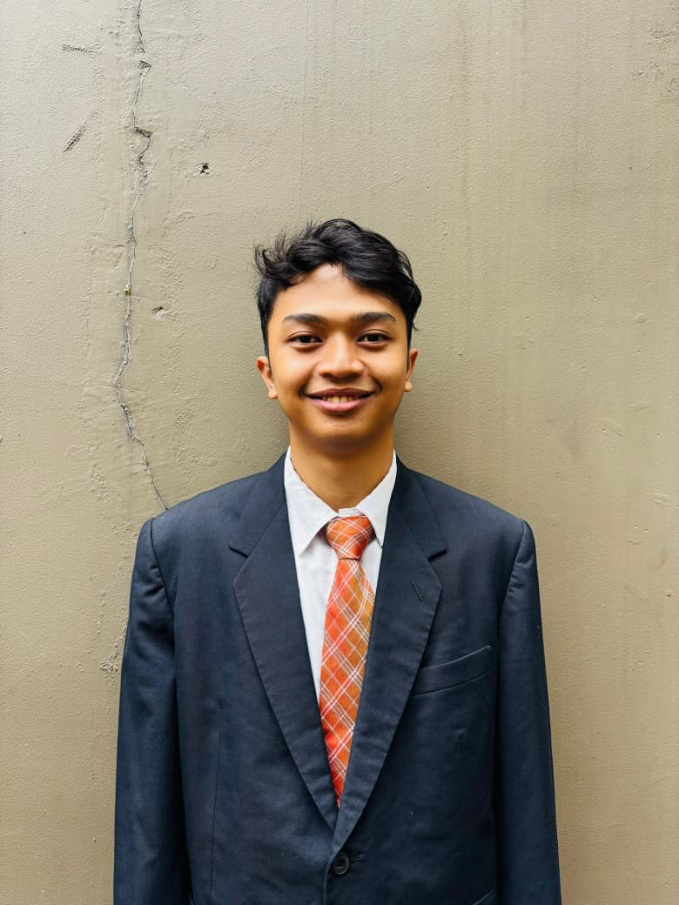

Kemah Geospasial
Kegiatan kemah geospasial tahun 2024 merupakan kegiatan lapangan yang bertujuan untuk mengaplikasikan ilmu geodesi dan pemetaan secara praktis di lapangan. Peserta akan belajar teknik survei, pengolahan data, dan pemanfaatan teknologi geospasial. Selain itu, kegiatan ini juga melatih kerja sama, tanggung jawab, dan kepedulian terhadap masyarakat.

Tedy Mas Budiman (Koordinator)
NRP: 23-2021-017

Ryvaldhi Dzacky Andyti Sudrajat
NRP: 23-2021-001

Rizky Ramadhan E
NRP: 23-2021-012

Danisti Hajar Aulia
NRP: 23-2021-065
Regiana Zalfa Salsabila
NRP: 23-2021-066